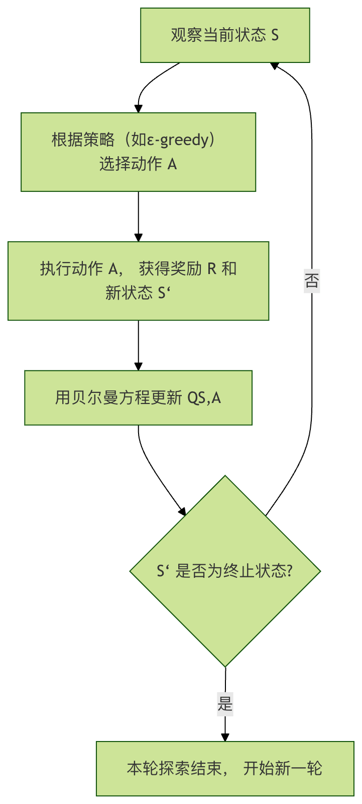

Aprendizaje automático - Ejemplo de aprendizaje por refuerzo
Imagina que le enseñas a un cachorro la orden de sentarse. No le dices directamente qué significa la palabra "siéntate", sino que lo guías mediante recompensas y castigos.
- Cuando el cachorro se sienta por casualidad, le das una golosina de inmediato (recompensa）。
- Cuando hace algo mal, no le das golosina (castigo）。
Después de muchos intentos, el cachorro finalmente entenderá la asociación entre la orden "siéntate" y obtener la golosina, y así aprenderá esta habilidad.
Aprendizaje por refuerzoEs un método de aprendizaje automático que permite a una computadora (o agente) aprender, a través de prueba y error, cómo tomar decisiones óptimas en interacción con el entorno para obtener la máxima recompensa acumulada.
Aprendizaje por refuerzoEs fundamentalmente diferente del aprendizaje supervisado (que tiene respuestas estándar) y del aprendizaje no supervisado (que busca la estructura interna de los datos) que hemos visto antes. El núcleo del aprendizaje por refuerzo esel agente 与 el entornola interacción continua entre ambos.
Análisis de conceptos clave
Antes de profundizar en el código, entendamos algunos conceptos clave. Son como las reglas del juego, que definen cómo funciona el mundo del aprendizaje por refuerzo.
-
Agente:El agente es nuestro aprendiz o tomador de decisiones. En la analogía anterior, es el cachorro. En un programa, es un algoritmo que observa el entorno, toma acciones y aprende de los resultados.
-
Entorno:El entorno es el mundo exterior en el que se encuentra el agente. Recibe las acciones del agente y da dos retroalimentaciones: el nuevo estado del entorno y la recompensa inmediata de la acción.
-
Estado:El estado es la descripción de la situación específica del entorno en un momento dado. Por ejemplo, en un juego de laberinto, el estado son las coordenadas de la posición actual del agente.
-
Acción:La acción es la elección que el agente puede tomar en un estado dado. Por ejemplo, en un laberinto, las acciones pueden ser arriba, abajo, izquierda y derecha.
-
Recompensa:La recompensa es una señal de evaluación directa del entorno sobre la acción del agente, generalmente un valor numérico.Recompensa positivaindica estímulo,recompensa negativaindica castigo. El objetivo final del agente es maximizar la recompensa total (acumulada) obtenida de principio a fin.Recompensa total (acumulada)。
-
Política:La política es la regla de comportamiento del agente; define qué acción se debe elegir en cada estado posible. El proceso de aprendizaje, en esencia, es el proceso de optimizar esta política.
Para entender de forma más intuitiva cómo funcionan juntos estos conceptos, veamos el flujo básico de interacción del aprendizaje por refuerzo:

Este ciclo continúa hasta alcanzar un estado terminal (como completar el juego o fracasar).
Problema clásico: Cliff Walking
Para poner la teoría en práctica, usaremos un entorno de ejemplo clásico del aprendizaje por refuerzo:CliffWalking-v0(Cliff Walking). Proviene degymnasiumla biblioteca (rama de mantenimiento del OpenAI Gym original).
Descripción del entorno
- Escenario: un mundo de cuadrícula de 4x12.
- Punto de inicio: esquina inferior izquierda (coordenadas [3, 0]).
- Punto final: esquina inferior derecha (coordenadas [3, 11]).
- Acantilado: todas las posiciones de la fila inferior excepto el inicio y el final ([3, 1] a [3, 10]); caer al acantilado produce una gran penalización y regresas al inicio.
- Objetivo: el agente debe ir de manera segura del inicio al final, evitando caer por el acantilado.
- Acciones: arriba (0), derecha (1), abajo (2), izquierda (3).
- Recompensas：
- Por cada paso en una celda normal: -1 (incentiva llegar con menos pasos)
- Caer por el acantilado: -100, y regresas al inicio
- Llegar a la meta: 0, y termina este intento
Introducción al algoritmo: Q-Learning
Usaremos elQ-Learningalgoritmo para resolver este problema. Es unalgoritmo sin modelode aprendizaje por refuerzo, lo que significa que el agente no necesita conocer de antemano las reglas de funcionamiento del entorno (como las probabilidades de transición de estado); aprende mediante prueba continua.
Su núcleo es una estructura llamadatabla Q.
- 行Las filas representan todos los estados posibles.
- 列Las columnas representan todas las acciones posibles.
- El valor de la celda (valor Q)representa la ganancia esperada a largo plazo al tomar una acción en un estado dado.
El proceso de aprendizaje de Q-Learning se puede resumir en los siguientes pasos, que muestran cómo el agente actualiza su conocimiento (tabla Q) a través de una experiencia:

Fórmula clave: Ecuación de Bellman
La base matemática de la actualización de la tabla Q es la ecuación de Bellman, cuya fórmula de actualización es la siguiente:
\[ Q(S, A) \leftarrow Q(S, A) + \alpha [R + \gamma \max_{a} Q(S', a) - Q(S, A)] \]
Desglosemos cada parte de esta fórmula:
| Símbolo | Significado | Analogía |
|---|---|---|
| \( Q(S, A) \) | Valor Q original de la acción A en el estado S | Tu antigua puntuación para la decisión de seguir recto en un cruce |
| \(\alpha \) | Tasa de aprendizaje (0 < α ≤ 1) | Qué tanto confías en esta nueva experiencia. α=1 significa que la nueva experiencia reemplaza por completo el conocimiento anterior; α=0.1 significa que la nueva experiencia solo corrige ligeramente el conocimiento anterior. |
| \(R \) | Obtenida después de ejecutar la acción ARecompensa inmediata | Después de seguir recto, encontraste la vía despejada y obtuviste una pequeña retroalimentación positiva (+1). |
| \(\gamma \) | Factor de descuento (0 ≤ γ < 1) | Qué tanto valoras las recompensas futuras. γ=0 significa que solo te importa la recompensa inmediata; γ=0.9 significa que valoras mucho las ganancias a largo plazo. |
| \(\max_{a} Q(S', a) \) | El valor Q máximo entre todas las acciones posibles en el nuevo estado S' | Después de llegar a un nuevo cruce, evalúas cuál de girar a la izquierda, girar a la derecha o seguir recto tiene el mayor beneficio futuro. |
| \(R + \gamma \max_{a} Q(S', a)\) | Valor Q objetivo, que representa una estimación nueva y mejor de la decisión actual. | Combina la recompensa inmediata y la mejor ganancia futura para obtener una nueva puntuación para la decisión de seguir recto en el cruce anterior. |
| \(R + \gamma \max_{a} Q(S', a) - Q(S, A)\) | Error de diferencia temporal, la brecha entre el conocimiento nuevo y el anterior. | La diferencia entre la nueva puntuación y la anterior; esta diferencia impulsa el aprendizaje. |
En pocas palabras, esta fórmula permite al agente usarrecompensa inmediata + descuento de la mejor estimación futurapara corregir continuamente su juicio sobre el valor de la decisión actual.
Práctica: Escribir un agente Q-Learning
Ahora, implementemos con código un agente Q-Learning que resuelva el problema de Cliff Walking.
Paso 1: Instalación e importación de bibliotecas
Primero, asegúrate de haber instalado las bibliotecas necesarias. Ejecuta en la terminal o línea de comandos:
Ejemplo
Luego, impórtalas en un archivo de Python:
Ejemplo
import numpy as np
import random
Paso 2: Inicializar el entorno y la tabla Q
Ejemplo
env = gym.make("CliffWalking-v0", render_mode="human") # render_mode="human" se usa para visualización
# 2. Obtener la información del entorno
n_states = env.observation_space.n # Número total de estados (4*12=48)
n_actions = env.action_space.n # Número total de acciones (4 direcciones)
# 3. Inicializar la tabla Q, con forma [número de estados, número de acciones], todos los valores iniciales en 0
Q_table = np.zeros((n_states, n_actions))
print(f"Número de estados del entorno: {n_states}, número de acciones: {n_actions}")
print(f"Forma de la tabla Q: {Q_table.shape}")
Paso 3: Configurar los hiperparámetros
Los hiperparámetros son las perillas que controlan el comportamiento del algoritmo y deben ajustarse según el problema.
Ejemplo
alpha = 0.1 # Tasa de aprendizaje: el grado de influencia de la nueva información
gamma = 0.99 # Factor de descuento: importancia de las recompensas futuras
epsilon = 0.1 # Tasa de exploración: probabilidad de realizar exploración aleatoria (en lugar de elegir la mejor conocida)
num_episodes = 500 # Número de episodios de entrenamiento (veces que el agente juega)
Paso 4: Implementar la política ε-greedy
Esta es la estrategia central para que el agente tome decisiones; equilibraExploración 和 Explotación。
- Exploración: elegir acciones aleatorias para descubrir posibles mejores políticas.
- Explotación: elegir la acción que la tabla Q actual considera óptima para obtener el máximo beneficio.
Ejemplo
"""
Seleccionar una acción según la política ε-greedy.
Parámetros:
state: estado actual
Q_table: tabla de valores Q
epsilon: probabilidad de exploración
Retorna:
action: acción seleccionada (0, 1, 2, 3)
"""
# Generar un número aleatorio entre 0 y 1
if random.uniform(0, 1) < epsilon:
# Exploración: elegir una acción aleatoria
action = env.action_space.sample()
else:
# Explotación: elegir la acción con el mayor valor Q en el estado actual
# np.argmax devuelve el índice del valor máximo, es decir, la acción óptima
action = np.argmax(Q_table[state])
return action
Paso 5: Bucle de entrenamiento principal
Este es el proceso principal de aprendizaje del algoritmo.
Ejemplo
reward_history = []
for episode in range(num_episodes):
# Reiniciar el entorno y obtener el estado inicial
state, _ = env.reset()
total_reward = 0 # Recompensa acumulada en este episodio
terminated = False # Si se alcanzó el estado terminal (meta/acantilado)
truncated = False # Si terminó por exceder el límite de pasos (generalmente no ocurre en este entorno)
# Bucle de interacción de este episodio hasta que el juego termine
while not (terminated or truncated):
# 1. Elegir acción
action = choose_action(state, Q_table, epsilon)
# 2. Ejecutar la acción y obtener la retroalimentación del entorno
next_state, reward, terminated, truncated, _ = env.step(action)
# 3. Actualizar la tabla Q (fórmula central de actualización de Q-Learning)
# Obtener el valor Q actual
current_q = Q_table[state, action]
# Calcular el valor Q objetivo: recompensa inmediata + descuento del valor Q máximo futuro
# Nota: si el siguiente estado es terminal, no hay valor Q futuro
if terminated:
target_q = reward
else:
target_q = reward + gamma * np.max(Q_table[next_state])
# Aplicar la ecuación de Bellman para actualizar el valor Q
Q_table[state, action] = current_q + alpha * (target_q - current_q)
# 4. Transitar al siguiente estado y acumular recompensa
state = next_state
total_reward += reward
# Registrar la recompensa total de este episodio
reward_history.append(total_reward)
# Imprimir el progreso cada 100 episodios
if (episode + 1) % 100 == 0:
avg_reward = np.mean(reward_history[-100:]) # Recompensa promedio de los últimos 100 episodios
print(f"Episodio {episode + 1}, recompensa promedio de los últimos 100 episodios: {avg_reward:.2f}")
# Fin del entrenamiento, cerrar el entorno
env.close()
Paso 6: Probar el agente entrenado
Después del entrenamiento, desactivamos la exploración y dejamos que el agente utilice exclusivamente el conocimiento aprendido (tabla Q) para recorrer el entorno y observar su desempeño.
Ejemplo
# Crear un nuevo entorno de prueba (puedes omitir render_mode o cambiarlo a "human" para visualizar)
test_env = gym.make("CliffWalking-v0", render_mode="human")
state, _ = test_env.reset()
test_terminated = False
test_truncated = False
step_count = 0
while not (test_terminated or test_truncated):
# Durante la prueba, establecemos epsilon=0, es decir, solo explotación, sin exploración
action = choose_action(state, Q_table, epsilon=0)
state, reward, test_terminated, test_truncated, _ = test_env.step(action)
step_count += 1
print(f"Paso {step_count}: estado {state}, acción {action}, recompensa {reward}")
print(f"¡Prueba completada! Pasos totales: {step_count}, recompensa total: {reward} (la recompensa por llegar a la meta es 0)")
test_env.close()
Resultados y análisis
Código completo:
Ejemplo
import numpy as np
import random
# =========================
# 1. Crear el entorno
# =========================
env = gym.make("CliffWalking-v0", render_mode="human")
# =========================
# 2. Obtener información del entorno
# =========================
n_states = env.observation_space.n
n_actions = env.action_space.n
# =========================
# 3. Inicializar la tabla Q
# =========================
Q_table = np.zeros((n_states, n_actions))
print(f"Número de estados del entorno: {n_states}")
print(f"Número de acciones: {n_actions}")
print(f"Forma de la tabla Q: {Q_table.shape}")
# =========================
# 4. Configurar hiperparámetros
# =========================
alpha = 0.1
gamma = 0.99
epsilon = 0.1
num_episodes = 500
# =========================
# 5. Política ε-greedy
# =========================
def choose_action(state, Q_table, epsilon):
if random.uniform(0, 1) < epsilon:
return env.action_space.sample()
return np.argmax(Q_table[state])
# =========================
# 6. Bucle de entrenamiento
# =========================
reward_history = []
for episode in range(num_episodes):
state, _ = env.reset()
total_reward = 0
terminated = False
truncated = False
while not (terminated or truncated):
action = choose_action(state, Q_table, epsilon)
next_state, reward, terminated, truncated, _ = env.step(action)
current_q = Q_table[state, action]
if terminated:
target_q = reward
else:
target_q = reward + gamma * np.max(Q_table[next_state])
Q_table[state, action] = current_q + alpha * (target_q - current_q)
state = next_state
total_reward += reward
reward_history.append(total_reward)
if (episode + 1) % 100 == 0:
avg_reward = np.mean(reward_history[-100:])
print(f"Episodio {episode + 1}, recompensa promedio de los últimos 100 episodios: {avg_reward:.2f}")
env.close()
# =========================
# 7. Probar el resultado del entrenamiento
# =========================
print("\n=== Inicio de la prueba ===)
test_env = gym.make("CliffWalking-v0", render_mode="human")
state, _ = test_env.reset()
terminated = False
truncated = False
step_count = 0
total_reward = 0
while not (terminated or truncated):
action = choose_action(state, Q_table, epsilon=0)
state, reward, terminated, truncated, _ = test_env.step(action)
step_count += 1
total_reward += reward
print(f"Paso {step_count}: estado {state}, acción {action}, recompensa {reward}")
print(f"Prueba completada, pasos totales: {step_count}, recompensa total: {total_reward}")
test_env.close()
Después de ejecutar el código completo anterior, verás dos fenómenos muy intuitivos: el cambio de recompensa durante el entrenamiento y la ruta de acción real del agente durante la prueba.
1. Fase de entrenamiento: la recompensa aumenta gradualmente
Durante el entrenamiento, la consola imprime cada 100 episodios la recompensa promedio de los últimos 100 episodios. Por ejemplo:
轮次 100, 最近100轮平均奖励: -120.45 轮次 200, 最近100轮平均奖励: -65.32 轮次 300, 最近100轮平均奖励: -32.18 轮次 400, 最近100轮平均奖励: -18.06 轮次 500, 最近100轮平均奖励: -13.94
Observarás una tendencia clara:La recompensa promedio sigue aumentando (el valor absoluto del valor negativo disminuye)。
¿Qué significa esto?
- Al inicio del entrenamiento, el agente cae con frecuencia al acantilado y recibe muchas
-100penalizaciones. - A medida que avanza el entrenamiento, la tabla Q aprende gradualmente "qué caminos son peligrosos y qué caminos son seguros".
- El agente comienza a evitar activamente el acantilado y elige una ruta segura que, aunque es más larga, tiene menos penalización.
El aumento de la recompensa refleja, en esencia, la mejora en la calidad de la política.
2. Fase de prueba: comportamiento del agente
En la fase de prueba, fijamos εepsilona 0, lo que significa:
- Ya no se realiza ninguna exploración aleatoria
- Actúa completamente según la política óptima aprendida en la tabla Q
Si activas el modo de renderizadorender_mode="human", verás un comportamiento muy típico:
- El agente parte desde el punto de inicio
- Se mueve horizontalmente por la fila justo encima del acantilado
- Al acercarse a la meta, se mueve hacia abajo y llega a la meta a salvo.
Esto es lo que se considera en el entorno CliffWalking comopolítica óptima：
- no es el camino más corto (pegado al acantilado)
- sinola de penalización esperada mínimadel camino
Esto refleja una característica central del aprendizaje por refuerzo:Lo que busca es la recompensa acumulada a largo plazo, no el óptimo a corto plazo.。
3. ¿Por qué aprende a dar un rodeo en lugar de ir directo arriesgándose?
Esta es una pregunta muy importante y también muy clásica.
Desde la intuición humana, caminar pegado al acantilado es el camino más corto, pero para el agente:
- Si da un paso en falso, recibe inmediatamente
-100una gran penalización. - En comparación, dar unos pasos más solo añade unos pocos
-1
Bajo el efecto acumulativo de la ecuación de Bellman:
Pérdidas pequeñas estables < desastres grandes ocasionales
Por lo tanto, Q-Learning converge naturalmente a una política más conservadora pero con un mayor retorno esperado global.
Preguntas frecuentes e influencia de los parámetros
1. ¿Qué sucede si la tasa de aprendizaje α es demasiado grande o demasiado pequeña?
- α demasiado grande: el proceso de aprendizaje oscila, la política es inestable y es fácil descartar repetidamente la experiencia existente.
- α demasiado pequeña: el aprendizaje es muy lento y se necesitan muchos episodios para converger.
En este ejemplo,0.1es una opción relativamente segura.
2. Significado intuitivo del factor de descuento γ
γ → 0: el agente solo se preocupa por la recompensa inmediata y tiende a ser miopeγ → 1: el agente valora mucho las consecuencias a largo plazo y se parece más a un planificador con visión a largo plazo
En el problema de búsqueda de ruta en el acantilado, un γ mayor ayuda al agente a darse cuenta de que dar un paso más ahora es para evitar una pérdida mayor en el futuro.
3. Esencia del papel de ε
εdetermina la personalidad del agente:
- ε grande → aventurero, explora mucho
- ε pequeño → conservador, explota más la experiencia existente
En proyectos reales, normalmente se utilizauna estrategia de decaimiento de ε：
- más exploración en las etapas iniciales
- y converger gradualmente a una política estable en las etapas finales
Limitaciones de este ejemplo y direcciones de expansión
Aunque Q-Learning es muy clásico, también tiene limitaciones evidentes:
- El tamaño de la tabla Q crece linealmente con el espacio de estados
- No puede manejar directamente estados continuos (como el mundo físico real)
- La convergencia es lenta en entornos complejos
Es por esto que, en problemas más complejos, introducimos:
- Deep Q-Network（DQN）
- Policy Gradient
- Actor-Critic
Estos reemplazan la tabla Q con redes neuronales, lo que permite que el aprendizaje por refuerzo se aplique a escenarios reales como videojuegos, control de robots y conducción autónoma.
Resumen
Con este ejemplo completo de aprendizaje por refuerzo, ya has:
- entendido la diferencia fundamental entre el aprendizaje por refuerzo y el aprendizaje supervisado / no supervisado
- dominado el ciclo completo de agente, entorno, estado, acción, recompensa y política
- implementado con tus propias manos un agente Q-Learning ejecutable, observable y convergente
- entendido la idea central del aprendizaje por refuerzo de maximizar el retorno a largo plazo
Haz clic para compartir notas
<p style="font-size:14px;">¡La nota debe ser una extensión del contenido de este artículo!</p><br> <p style="font-size:12px;"><a href="../tougao.html" target="_blank">Haga clic aquí para enviar un artículo</a></p> <p style="font-size:14px;"><a href="../w3cnote/runoob-user-test-intro.html" target="_blank">Cómo obtener el código de invitación de registro</a></p> <h3 class="text-muted"><i class="fa fa-info-circle" aria-hidden="true"></i> ¡Antes de compartir notas, debe <a href=";.html" class="runoob-pop">iniciar sesión</a>!</h3> <p><a href="../w3cnote/runoob-user-test-intro.html" target="_blank">Cómo obtener el código de invitación de registro</a></p>